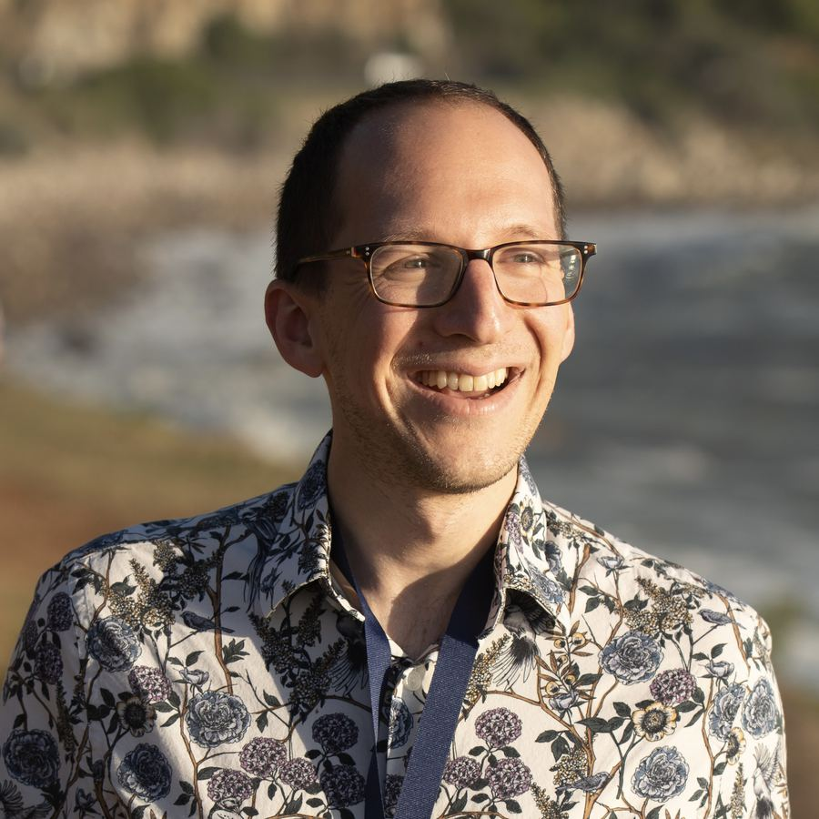

About Michael

I'm an Assistant Professor in the Department of Earth, Ocean, and Atmospheric Science at Florida State University. My research focuses on how interactions between clouds and tiny atmospheric particles called aerosols influence Earth's climate. My group uses observations, modeling, and theory to understand Earth's climate system, and I'm also interested in how climate science can and should be used to inform policy.
Outreach
- Developed a problem-based learning module on planetary energy balance and geoengineering with K-12 teachers — read about it on the UW Program on Climate Change blog.
- Active with UAW Local 4121 communicating climate science to labor communities.
- Gave written testimony to the Washington State Legislature on carbon mitigation.
- Runs climate science pub trivia, exoplanet climate lessons (see the interactive models), and has discussed climate change and life as a scientist at Shabbat dinners.
Outside of work
I enjoy photography, hiking, reading (often about history), travel, and hanging out with my wife and our puppy.